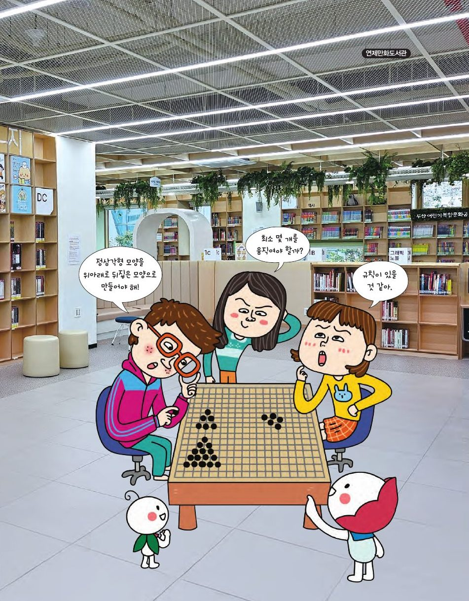

"왜 이럴까?", "어떻게 하면 될까?" 궁금증을 재미있게 풀어낸 것이 퍼즐이에요. 생각의 힘으로 답을 찾아가는 수학 퍼즐에 도전해 보세요.
★ 이 단원에서는 — 자리 이동 퍼즐에서 규칙을 찾고, 이를 식으로 나타낼 수 있다.

📍 연제만화도서관바둑돌을 옮겨 삼각형을 위아래로 뒤집은 모양으로 만들어 보세요. 돌을 누른 뒤 빈 자리(노란 점)를 누르면 옮겨져요. 최소 몇 번에 될까요?
규칙을 바로 알려 주지 않아요! 단계를 하나씩 마치면 다음 단계가 열려요.
흰 돌과 검은 돌이 n개씩일 때의 규칙을 단계별로 찾아봐요.
양쪽에 놓인 바둑돌의 개수가 다른 경우는 어떻게 될지 탐구해 보세요. 규칙은 활동 2와 같아요.
흰 돌 m개, 검은 돌 n개일 때의 규칙을 단계별로 찾아봐요.
[그림 1]의 돌을 [그림 2]처럼 흑백이 바뀐 모양으로 옮겨 보세요. 처음이라면 3×3부터 도전!
가운데 빈칸이 있는 가로줄과 세로줄을 먼저 1차원 퍼즐처럼 풀어 보세요. 한 줄을 바꿔 놓으면 빈칸이 다른 줄로 옮겨 가요. 줄 하나씩 차례로 바꾸는 것이 기본 전략이에요.
1(또는 4)의 말이 첫 수에 가운데로 들어가면 상대의 두 말은 갈 곳이 하나도 없어서 바로 끝나 버려요. 4와 1 사이에는 길(우물)이 없거든요.
고누놀이에는 우물고누, 호박고누, 넉줄고누, 참고누 등이 있어요.